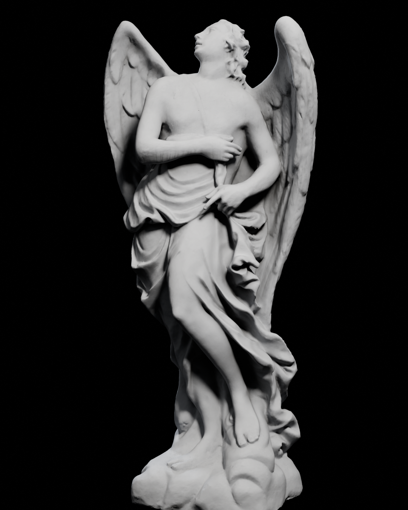
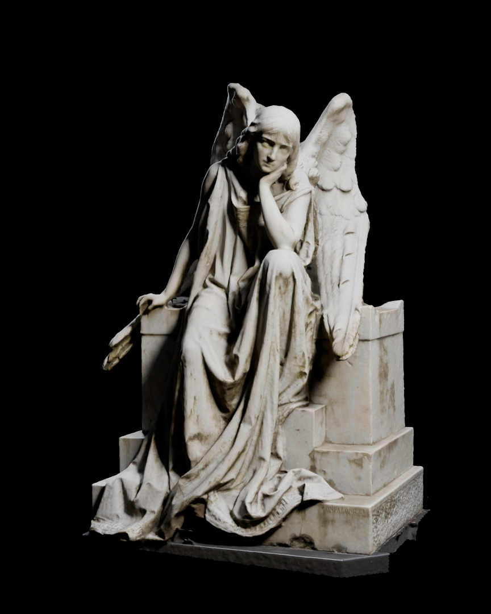
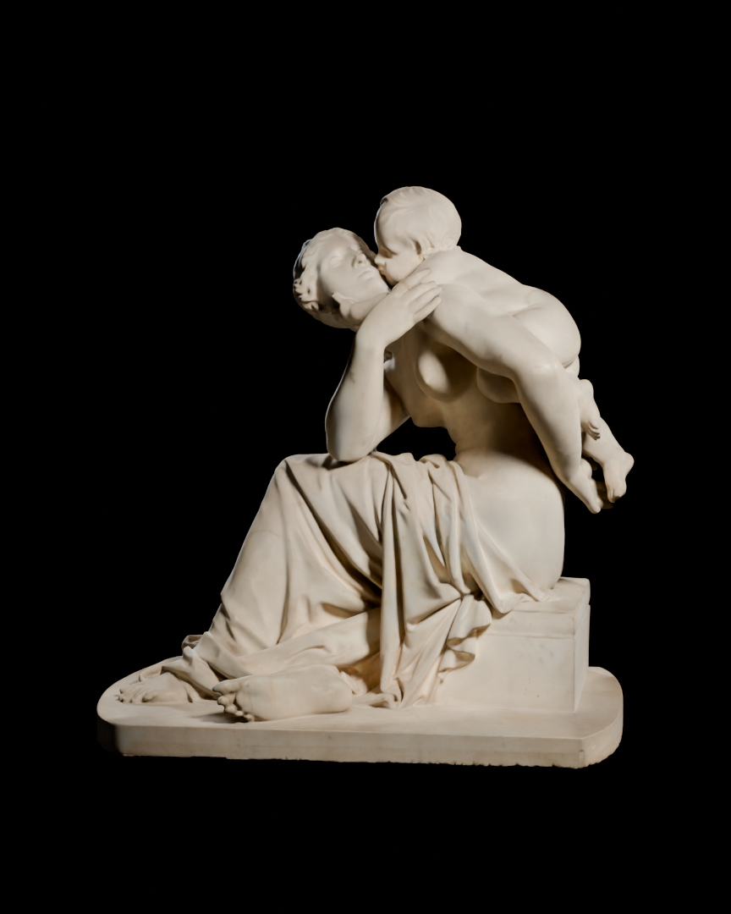

Gate 1 · The three hero statues, rendered on obsidian black: APPROVED
Path-traced in Blender Cycles with one warm key light, a cool rim light and no fill. This is the lighting language Act I starts from. On the site, the camera moves across each one as you scroll.

I · The Angel: Engel, scan by noe-3d.at (CC-BY). Gazing upward, open.

II · The Angel of Death: mourning angel, Monumental Cemetery of Milan (CC-BY). Granite backing wall cut away. The scan has no back, so the camera stays within about 60° of her front.

III · The Mother: Maternal Affection (CC-BY). Clean marble, intact.